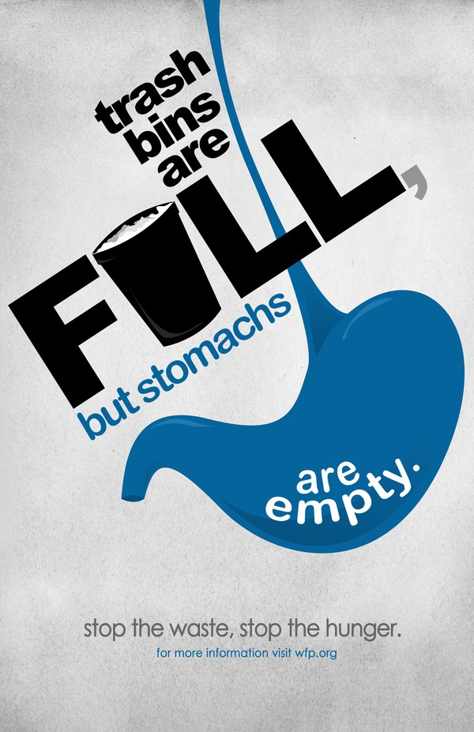

TERASA helps donor to donates their renaming food or unuseful things to them which we can to redistibutes to poor peoples.The system will help in easy way to reduce food wastage and use in useful way and also provide donation service for other things to.
"It's not how much we give but how much love we put into giving."
